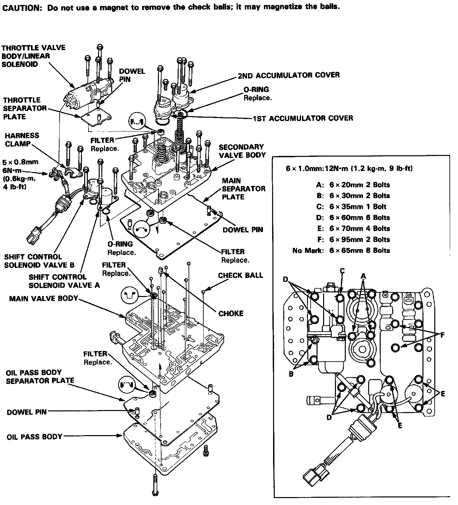

Operation CHARM
: Car repair manuals for everyone.
Home
>>
Acura
>>
1993
>>
Legend Coupe V6-3206cc 3.2L SOHC FI
>>
Repair and Diagnosis
>>
Transmission and Drivetrain
>>
Transmission Control Systems
>>
Actuators and Solenoids - Transmission and Drivetrain
>>
Actuators and Solenoids - A/T
>>
Shift Solenoid
>>
Locations
Shift Solenoid: Locations

Throttle Valve Body/Linear Solenoid